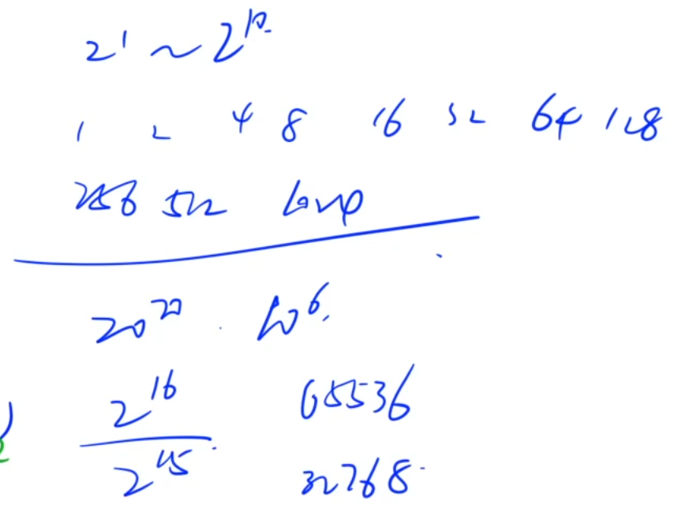

如何准备蓝桥杯考试
完成全部知识点
10个比较重要的知识点，来自于历年蓝桥杯真题
例题的思路全部要弄明白，课后习题也要写
授课时间 50 小时左右
由题目描述抽象出模型

递归与递推
理解递归可以画出来它的递归搜索树


AcWing 92. 递归实现指数型枚举
https://www.acwing.com/problem/content/94/
从 1∼n 这 n 个整数中随机选取任意多个，输出所有可能的选择方案。
输入格式
输入一个整数 n。
输出格式
每行输出一种方案。
同一行内的数必须升序排列，相邻两个数用恰好 1 个空格隔开。
对于没有选任何数的方案，输出空行。
本题有自定义校验器（SPJ），各行（不同方案）之间的顺序任意。
数据范围
1≤n≤15
输入样例：
13
输出样例：
xxxxxxxxxx7132232 34151 361 271 2 3

x1
6using namespace std;7
8const int N = 16;9
10int n;11int st[N]; // 状态，记录每个位置当前的状态：0表示还没考虑，1表示选它，2表示不选它12
13void dfs(int u)14{15 if (u > n)16 {17 for (int i = 1; i <= n; i ++ )18 if (st[i] == 1)19 printf("%d ", i);20 printf("\n");21 return;22 }23
24 st[u] = 2;25 dfs(u + 1); // 第一个分支：不选26 st[u] = 0; // 恢复现场27
28 st[u] = 1;29 dfs(u + 1); // 第二个分支：选30 st[u] = 0;31}32
33int main()34{35 cin >> n;36
37 dfs(1);38
39 return 0;40}
AcWing 94. 递归实现排列型枚举
https://www.acwing.com/problem/content/96/
把 1∼n 这 n 个整数排成一行后随机打乱顺序，输出所有可能的次序。
输入格式
一个整数 n。
输出格式
按照从小到大的顺序输出所有方案，每行 1 个。
首先，同一行相邻两个数用一个空格隔开。
其次，对于两个不同的行，对应下标的数一一比较，字典序较小的排在前面。
数据范围
1≤n≤9
输入样例：
xxxxxxxxxx113
输出样例：
xxxxxxxxxx611 2 321 3 232 1 342 3 153 1 263 2 1
依次枚举每个数放到哪个位置
依次枚举每个位置放哪个数字

xxxxxxxxxx451
6using namespace std;7
8const int N = 10;9
10int n;11int state[N]; // 0 表示还没放数，1~n表示放了哪个数12bool used[N]; // true表示用过，false表示还未用过13
14void dfs(int u)15{16 if (u > n) // 边界17 {18 for (int i = 1; i <= n; i ++ ) printf("%d ", state[i]); // 打印方案19 puts("");20
21 return;22 }23
24 // 依次枚举每个分支，即当前位置可以填哪些数25 for (int i = 1; i <= n; i ++ )26 if (!used[i])27 {28 state[u] = i;29 used[i] = true;30 dfs(u + 1);31
32 // 恢复现场33 state[u] = 0;34 used[i] = false;35 }36}37
38int main()39{40 scanf("%d", &n);41
42 dfs(1);43
44 return 0;45}
AcWing 93. 递归实现组合型枚举
https://www.acwing.com/problem/content/95/
从 1∼n 这 n 个整数中随机选出 m 个，输出所有可能的选择方案。
输入格式
两个整数 n,m ,在同一行用空格隔开。
输出格式
按照从小到大的顺序输出所有方案，每行 1 个。
首先，同一行内的数升序排列，相邻两个数用一个空格隔开。
其次，对于两个不同的行，对应下标的数一一比较，字典序较小的排在前面（例如 1 3 5 7 排在 1 3 6 8 前面）。
数据范围
n>0 0≤m≤n n+(n−m)≤25
输入样例：
xxxxxxxxxx115 3
输出样例：
xxxxxxxxxx1011 2 321 2 431 2 541 3 451 3 561 4 572 3 482 3 592 4 5103 4 5
思考题：如果要求使用非递归方法，该怎么做呢？
xxxxxxxxxx381
6using namespace std;7
8const int N = 30;9
10int n, m;11int way[N];12
13void dfs(int u, int start)14{15 if (u + n - start < m) return; // 剪枝16 if (u == m + 1)17 {18 for (int i = 1; i <= m; i ++ ) printf("%d ", way[i]);19 puts("");20 return;21 }22
23 for (int i = start; i <= n; i ++ )24 {25 way[u] = i;26 dfs(u + 1, i + 1);27 way[u] = 0; // 恢复现场28 }29}30
31int main()32{33 scanf("%d%d", &n, &m);34
35 dfs(1, 1);36
37 return 0;38}
AcWing 1209. 带分数
https://www.acwing.com/problem/content/1211/

输入格式
一个正整数。
输出格式
输出输入数字用数码 1∼9 不重复不遗漏地组成带分数表示的全部种数。
数据范围
1≤N<106
输入样例1：
xxxxxxxxxx11100
输出样例1：
xxxxxxxxxx1111
输入样例2：
xxxxxxxxxx11105
输出样例2：
xxxxxxxxxx116
https://www.acwing.com/solution/content/38879/
AcWing 1209. 带分数（y总字幕版本，思路贼清晰）
xxxxxxxxxx741
6using namespace std;7
8const int N = 10;9
10int n;11bool st[N], backup[N];12int ans;13
14bool check(int a, int c)15{16 long long b = n * (long long)c - a * c;17
18 if (!a || !b || !c) return false;19
20 memcpy(backup, st, sizeof st);21 while (b)22 {23 int x = b % 10; // 取个位24 b /= 10; // 个位删掉25 if (!x || backup[x]) return false;26 backup[x] = true;27 }28
29 for (int i = 1; i <= 9; i ++ )30 if (!backup[i])31 return false;32
33 return true;34}35
36void dfs_c(int u, int a, int c)37{38 if (u > 9) return;39
40 if (check(a, c)) ans ++ ;41
42 for (int i = 1; i <= 9; i ++ )43 if (!st[i])44 {45 st[i] = true;46 dfs_c(u + 1, a, c * 10 + i);47 st[i] = false;48 }49}50
51void dfs_a(int u, int a)52{53 if (a >= n) return;54 if (a) dfs_c(u, a, 0);55
56 for (int i = 1; i <= 9; i ++ )57 if (!st[i])58 {59 st[i] = true;60 dfs_a(u + 1, a * 10 + i);61 st[i] = false;62 }63}64
65int main()66{67 cin >> n;68
69 dfs_a(0, 0);70
71 cout << ans << endl;72
73 return 0;74}
AcWing 717. 简单斐波那契
https://www.acwing.com/problem/content/719/
以下数列 0 1 1 2 3 5 8 13 21 ... 被称为斐波纳契数列。
这个数列从第 3 项开始，每一项都等于前两项之和。
输入一个整数 N，请你输出这个序列的前 N 项。
输入格式
一个整数 N。
输出格式
在一行中输出斐波那契数列的前 N 项，数字之间用空格隔开。
数据范围
0<N<46
输入样例：
xxxxxxxxxx115
输出样例：
xxxxxxxxxx110 1 1 2 3
xxxxxxxxxx231
5using namespace std;6
7int main()8{9 int a = 0, b = 1;10 int n;11 cin >> n;12
13 for (int i = 0; i < n; i ++ )14 {15 cout << a << ' ';16 int c = a + b;17 a = b, b = c;18 }19
20 cout << endl;21
22 return 0;23}
AcWing 95. 费解的开关
https://www.acwing.com/problem/content/97/
你玩过“拉灯”游戏吗？
25 盏灯排成一个 5×5 的方形。
每一个灯都有一个开关，游戏者可以改变它的状态。
每一步，游戏者可以改变某一个灯的状态。
游戏者改变一个灯的状态会产生连锁反应：和这个灯上下左右相邻的灯也要相应地改变其状态。
我们用数字 1 表示一盏开着的灯，用数字 0 表示关着的灯。
下面这种状态
xxxxxxxxxx5110111201101310111410000511011
在改变了最左上角的灯的状态后将变成：
xxxxxxxxxx5101111211101310111410000511011
再改变它正中间的灯后状态将变成：
xxxxxxxxxx5101111211001311001410100511011
给定一些游戏的初始状态，编写程序判断游戏者是否可能在 6 步以内使所有的灯都变亮。
输入格式
第一行输入正整数 n，代表数据中共有 n 个待解决的游戏初始状态。
以下若干行数据分为 n 组，每组数据有 5 行，每行 5 个字符。
每组数据描述了一个游戏的初始状态。
各组数据间用一个空行分隔。
输出格式
一共输出 n 行数据，每行有一个小于等于 6 的整数，它表示对于输入数据中对应的游戏状态最少需要几步才能使所有灯变亮。
对于某一个游戏初始状态，若 66 步以内无法使所有灯变亮，则输出 −1。
数据范围
0<n≤500
输入样例：
xxxxxxxxxx181320011130101141000151101061110071110191110110111101111111121111113011111511111161111117111111811111
输出样例：
xxxxxxxxxx313223-1
xxxxxxxxxx691
6using namespace std;7
8const int N = 6;9
10char g[N][N], backup[N][N];11int dx[5] = {-1, 0, 1, 0, 0}, dy[5] = {0, 1, 0, -1, 0};12
13void turn(int x, int y)14{15 for (int i = 0; i < 5; i ++ )16 {17 int a = x + dx[i], b = y + dy[i];18 if (a < 0 || a >= 5 || b < 0 || b >= 5) continue; // 在边界外，直接忽略即可19 g[a][b] ^= 1;20 }21}22
23int main()24{25 int T;26 cin >> T;27 while (T -- )28 {29 for (int i = 0; i < 5; i ++ ) cin >> g[i];30
31 int res = 10;32 for (int op = 0; op < 32; op ++ )//枚举第一行的所有操作33 {34 memcpy(backup, g, sizeof g);35 int step = 0;36 for (int i = 0; i < 5; i ++ )37 if (op >> i & 1)38 {39 step ++ ;40 turn(0, i);41 }42
43 for (int i = 0; i < 4; i ++ )44 for (int j = 0; j < 5; j ++ )45 if (g[i][j] == '0')46 {47 step ++ ;48 turn(i + 1, j);49 }50
51 bool dark = false;52 for (int i = 0; i < 5; i ++ )53 if (g[4][i] == '0')54 {55 dark = true;56 break;57 }58
59 if (!dark) res = min(res, step);60 memcpy(g, backup, sizeof g);61 }62
63 if (res > 6) res = -1;64
65 cout << res << endl;66 }67
68 return 0;69}
AcWing 116. 飞行员兄弟
https://www.acwing.com/problem/content/118/
“飞行员兄弟”这个游戏，需要玩家顺利的打开一个拥有 16 个把手的冰箱。
已知每个把手可以处于以下两种状态之一：打开或关闭。
只有当所有把手都打开时，冰箱才会打开。
把手可以表示为一个 4×4 的矩阵，您可以改变任何一个位置 [i,j][i,j] 上把手的状态。
但是，这也会使得第 i 行和第 j 列上的所有把手的状态也随着改变。
请你求出打开冰箱所需的切换把手的次数最小值是多少。
输入格式
输入一共包含四行，每行包含四个把手的初始状态。
符号 + 表示把手处于闭合状态，而符号 - 表示把手处于打开状态。
至少一个手柄的初始状态是关闭的。
输出格式
第一行输出一个整数 N，表示所需的最小切换把手次数。
接下来 N 行描述切换顺序，每行输出两个整数，代表被切换状态的把手的行号和列号，数字之间用空格隔开。
注意：如果存在多种打开冰箱的方式，则按照优先级整体从上到下，同行从左到右打开。
数据范围
1≤i,j≤4
输入样例：
xxxxxxxxxx41-+--2----3----4-+--
输出样例：
xxxxxxxxxx71621 131 341 454 164 374 4
数组写法
xxxxxxxxxx771
6
9using namespace std;10
11typedef pair<int, int> PII;12
13const int N = 5;14
15char g[N][N], backup[N][N];16
17int get(int x, int y)18{19 return x * 4 + y;20}21
22void turn_one(int x, int y)23{24 if (g[x][y] == '+') g[x][y] = '-';25 else g[x][y] = '+';26}27
28void turn_all(int x, int y)29{30 for (int i = 0; i < 4; i ++ )31 {32 turn_one(x, i);33 turn_one(i, y);34 }35
36 turn_one(x, y);37}38
39int main()40{41 for (int i = 0; i < 4; i ++ ) cin >> g[i];42
43 vector<PII> res;44 for (int op = 0; op < 1 << 16; op ++ )45 {46 vector<PII> temp;47 memcpy(backup, g, sizeof g); // 备份48
49 // 进行操作50 for (int i = 0; i < 4; i ++ )51 for (int j = 0; j < 4; j ++ )52 if (op >> get(i, j) & 1)53 {54 temp.push_back({i, j});55 turn_all(i, j);56 }57
58 // 判断所有灯泡是否全亮59 bool has_closed = false;60 for (int i = 0; i < 4; i ++ )61 for (int j = 0; j < 4; j ++ )62 if (g[i][j] == '+')63 has_closed = true;64
65 if (has_closed == false)66 {67 if (res.empty() || res.size() > temp.size()) res = temp;68 }69
70 memcpy(g, backup, sizeof g); // 还原71 }72
73 cout << res.size() << endl;74 for (auto op : res) cout << op.x + 1 << ' ' << op.y + 1 << endl;75
76 return 0;77}二进制写法
xxxxxxxxxx511
3using namespace std;4typedef pair<int, int> PII;5const int N = 4;6
7int change[N][N];8
9int get(int x, int y) {10 return x * N + y;11}12
13int main() {14
15 for (int i = 0; i < N; i++)16 for (int j = 0; j < N; ++j) {17 for (int k = 0; k < 4; k++) {18 change[i][j] += 1 << get(i, k);19 change[i][j] += 1 << get(k, j);20 }21 change[i][j] -= 1 << get(i, j);22 }23
24 int state = 0;25 for (int i = 0; i < N; i++) {26 string line;27 cin >> line;28 for (int j = 0; j < N; j++)29 if (line[j] == '+') state += 1 << get(i, j);30 }31
32 vector<PII> path;33 for (int i = 0; i < 1 << 16; i++) {34 int now = state;35 vector<PII> temp;36 for (int j = 0; j < 16; j++) {37 if (i >> j & 1) {38 int x = j / 4, y = j % 4;39 now ^= change[x][y];40 temp.push_back({x, y});41 }42 }43 if (!now && (path.empty() || path.size() > temp.size())) path = temp;44 }45
46 cout << path.size() << endl;47 for (auto &p: path) {48 cout << p.first + 1 << " " << p.second + 1 << endl;49 }50 return 0;51}
AcWing 1208. 翻硬币
https://www.acwing.com/problem/content/1210/
小明正在玩一个“翻硬币”的游戏。
桌上放着排成一排的若干硬币。我们用 * 表示正面，用 o 表示反面（是小写字母，不是零）。
比如，可能情形是：**oo***oooo
如果同时翻转左边的两个硬币，则变为：oooo***oooo
现在小明的问题是：如果已知了初始状态和要达到的目标状态，每次只能同时翻转相邻的两个硬币,那么对特定的局面，最少要翻动多少次呢？
我们约定：把翻动相邻的两个硬币叫做一步操作。
输入格式
两行等长的字符串，分别表示初始状态和要达到的目标状态。
输出格式
一个整数，表示最小操作步数
数据范围
输入字符串的长度均不超过100。 数据保证答案一定有解。
输入样例1：
xxxxxxxxxx21**********2o****o****
输出样例1：
xxxxxxxxxx115
输入样例2：
xxxxxxxxxx21*o**o***o***2*o***o**o***
输出样例2：
xxxxxxxxxx111
xxxxxxxxxx331
5using namespace std;6
7const int N = 110;8
9int n;10char start[N], aim[N];11
12void turn(int i)13{14 if (start[i] == '*') start[i] = 'o';15 else start[i] = '*';16}17
18int main()19{20 cin >> start >> aim;21 n = strlen(start);22
23 int res = 0;24 for (int i = 0; i < n - 1; i ++ )25 if (start[i] != aim[i])26 {27 turn(i), turn(i + 1);28 res ++ ;29 }30
31 cout << res << endl;32 return 0;33}
整数二分

AcWing 789. 数的范围
https://www.acwing.com/problem/content/791/
给定一个按照升序排列的长度为 n 的整数数组，以及 q 个查询。
对于每个查询，返回一个元素 k 的起始位置和终止位置（位置从 0 开始计数）。
如果数组中不存在该元素，则返回 -1 -1。
输入格式
第一行包含整数 n 和 q，表示数组长度和询问个数。
第二行包含 n 个整数（均在 1∼10000 范围内），表示完整数组。
接下来 q 行，每行包含一个整数 k，表示一个询问元素。
输出格式
共 qq 行，每行包含两个整数，表示所求元素的起始位置和终止位置。
如果数组中不存在该元素，则返回 -1 -1。
数据范围
1≤n≤100000 1≤q≤10000 1≤k≤10000
输入样例：
xxxxxxxxxx516 321 2 2 3 3 4334455
输出样例：
xxxxxxxxxx313 425 53-1 -1
xxxxxxxxxx351
3using namespace std;4const int N = 1e5 + 10;5int n, q, k;6int a[N];7
8int main() {9 cin >> n >> q;10
11 for (int i = 0; i < n; i++) scanf("%d", &a[i]);12
13 while (q--) {14 scanf("%d", &k);15 int l = 0, r = n - 1;16 while (l < r) {17 int mid = (l + r) >> 1;18 if (a[mid] >= k) r = mid;19 else l = mid + 1;20 }21 if (a[l] != k) {22 puts("-1 -1");23 continue;24 }25 cout << l << " ";26 l = 0, r = n - 1;27 while (l < r) {28 int mid = (r + l + 1) >> 1;29 if (a[mid] <= k) l = mid;30 else r = mid - 1;31 }32 cout << r << endl;33 }34 return 0;35}l == r 时退出循环，所以 l 和 r 是一样的
一个mid = (l+r)>>1 一个mid = (l+r+1)>>1 加不加1 完全取决于 l = mid 还是r = mid l等于mid时必须+1向上取整 不然会陷入l=l的死循环 r = mid 时候不用加1 因为下一步l = r 直接会退出循环
y总代码
xxxxxxxxxx491
6using namespace std;7
8const int N = 100010;9
10int n, m;11int q[N];12
13int main()14{15 scanf("%d%d", &n, &m);16 for (int i = 0; i < n; i ++ ) scanf("%d", &q[i]);17
18 for (int i = 0; i < m; i ++ )19 {20 int x;21 scanf("%d", &x);22 // 二分x的左端点23 int l = 0, r = n - 1; // 确定区间范围24 while (l < r)25 {26 int mid = l + r >> 1;27 if (q[mid] >= x) r = mid;28 else l = mid + 1;29 }30
31 if (q[r] == x)32 {33 cout << r << ' ';34
35 // 二分x的右端点36 r = n - 1; // 右端点一定在[左端点, n - 1] 之间37 while (l < r)38 {39 int mid = l + r + 1 >> 1; // 因为写的是l = mid，所以需要补上140 if (q[mid] <= x) l = mid;41 else r = mid - 1;42 }43 cout << r << endl;44 }45 else cout << "-1 -1" << endl;46 }47
48 return 0;49}
AcWing 790. 数的三次方根
https://www.acwing.com/problem/content/792/
给定一个浮点数 n，求它的三次方根。
输入格式
共一行，包含一个浮点数 n。
输出格式
共一行，包含一个浮点数，表示问题的解。
注意，结果保留 6 位小数。
数据范围
−10000≤n≤10000
输入样例：
xxxxxxxxxx111000.00
输出样例：
xxxxxxxxxx1110.000000
xxxxxxxxxx221
5using namespace std;6
7int main()8{9 double x;10 cin >> x;11 double l = -10000, r = 10000;12 while (r - l > 1e-8)13 {14 double mid = (l + r) / 2;15 if (mid * mid * mid >= x) r = mid;16 else l = mid;17 }18
19 printf("%lf\n", l);20
21 return 0;22}
AcWing 730. 机器人跳跃问题
https://www.acwing.com/problem/content/732/
机器人正在玩一个古老的基于 DOS 的游戏。
游戏中有 N+1 座建筑——从 0 到 N 编号，从左到右排列。
编号为 0 的建筑高度为 0 个单位，编号为 i 的建筑高度为 H(i) 个单位。
起初，机器人在编号为 0 的建筑处。
每一步，它跳到下一个（右边）建筑。
假设机器人在第 k 个建筑，且它现在的能量值是 E，下一步它将跳到第 k+1 个建筑。
如果 H(k+1)>E，那么机器人就失去 H(k+1)−E 的能量值，否则它将得到 E−H(k+1) 的能量值。
游戏目标是到达第 N 个建筑，在这个过程中能量值不能为负数个单位。
现在的问题是机器人至少以多少能量值开始游戏，才可以保证成功完成游戏？
输入格式
第一行输入整数 N。
第二行是 N 个空格分隔的整数，H(1),H(2),…,H(N) 代表建筑物的高度。
输出格式
输出一个整数，表示所需的最少单位的初始能量值上取整后的结果。
数据范围
1≤N,H(i)≤105
输入样例1：
xxxxxxxxxx21523 4 3 2 4
输出样例1：
xxxxxxxxxx114
输入样例2：
xxxxxxxxxx21324 4 4
输出样例2：
xxxxxxxxxx114
输入样例3：
xxxxxxxxxx21321 6 4
输出样例3：
xxxxxxxxxx113
xxxxxxxxxx321
3using namespace std;4
5const int N = 1e5 + 10;6int n;7int a[N];8
9bool check(int e) {10 for (int i = 1; i <= n; i++) {11 e = e * 2 - a[i];12 if (e < 0) return false;13 if (e > 1e5) return true;14 }15 return true;16}17
18int main() {19 cin >> n;20
21 for (int i = 1; i <= n; i++) scanf("%d", &a[i]);22
23 int l = 0, r = 1e5;24 while (l < r) {25 int mid = l + r >> 1;26 if (check(mid)) r = mid;27 else l = mid + 1;28 }29 cout << l;30
31 return 0;32}
AcWing 1221. 四平方和
https://www.acwing.com/problem/content/1223/
四平方和定理，又称为拉格朗日定理：
每个正整数都可以表示为至多 4 个正整数的平方和。
如果把 0 包括进去，就正好可以表示为 4 个数的平方和。
比如：

对于一个给定的正整数，可能存在多种平方和的表示法。
要求你对 4 个数排序：
0≤a≤b≤c≤d
并对所有的可能表示法按 a,b,c,d 为联合主键升序排列，最后输出第一个表示法。
输入格式
输入一个正整数 N。
输出格式
输出4个非负整数，按从小到大排序，中间用空格分开。
数据范围
0<N<5∗106
输入样例：
xxxxxxxxxx115
输出样例：
xxxxxxxxxx110 0 1 2
暴力做法 原题超时
xxxxxxxxxx271
6using namespace std;7
8const int N = 2500010;9
10int n;11
12int main()13{14 cin >> n;15 for (int a = 0; a * a <= n; a ++ )16 for (int b = a; a * a + b * b <= n; b ++ )17 for (int c = b; a * a + b * b + c * c <= n; c ++ )18 {19 int t = n - a * a - b * b - c * c;20 int d = sqrt(t);21 if (d * d == t)22 {23 printf("%d %d %d %d\n", a, b, c, d);24 return 0;25 }26 }27}二分
xxxxxxxxxx521
6using namespace std;7
8const int N = 2500010;9
10struct Sum11{12 int s, c, d;13 bool operator< (const Sum &t)const14 {15 if (s != t.s) return s < t.s;16 if (c != t.c) return c < t.c;17 return d < t.d;18 }19}sum[N];20
21int n, m;22
23int main()24{25 cin >> n;26
27 for (int c = 0; c * c <= n; c ++ )28 for (int d = c; c * c + d * d <= n; d ++ )29 sum[m ++ ] = {c * c + d * d, c, d};30
31 sort(sum, sum + m);32
33 for (int a = 0; a * a <= n; a ++ )34 for (int b = 0; a * a + b * b <= n; b ++ )35 {36 int t = n - a * a - b * b;37 int l = 0, r = m - 1;38 while (l < r)39 {40 int mid = l + r >> 1;41 if (sum[mid].s >= t) r = mid;42 else l = mid + 1;43 }44 if (sum[l].s == t)45 {46 printf("%d %d %d %d\n", a, b, sum[l].c, sum[l].d);47 return 0;48 }49 }50
51 return 0;52}哈希表 原题超时
xxxxxxxxxx411
6
9using namespace std;10
11typedef pair<int, int> PII;12
13const int N = 2500010;14
15int n, m;16unordered_map<int, PII> S;17
18int main()19{20 cin >> n;21
22 for (int c = 0; c * c <= n; c ++ )23 for (int d = c; c * c + d * d <= n; d ++ )24 {25 int t = c * c + d * d;26 if (S.count(t) == 0) S[t] = {c, d};27 }28
29 for (int a = 0; a * a <= n; a ++ )30 for (int b = 0; a * a + b * b <= n; b ++ )31 {32 int t = n - a * a - b * b;33 if (S.count(t))34 {35 printf("%d %d %d %d\n", a, b, S[t].x, S[t].y);36 return 0;37 }38 }39
40 return 0;41}
AcWing 1227. 分巧克力
https://www.acwing.com/problem/content/1229/
儿童节那天有 K 位小朋友到小明家做客。
小明拿出了珍藏的巧克力招待小朋友们。
小明一共有 N 块巧克力，其中第 i 块是 Hi×Wi 的方格组成的长方形。
为了公平起见，小明需要从这 N 块巧克力中切出 K 块巧克力分给小朋友们。
切出的巧克力需要满足：
形状是正方形，边长是整数
大小相同
例如一块 6×5 的巧克力可以切出 6 块 2×2 的巧克力或者 2 块 3×3 的巧克力。
当然小朋友们都希望得到的巧克力尽可能大，你能帮小明计算出最大的边长是多少么？
输入格式
第一行包含两个整数 N 和 K。
以下 N 行每行包含两个整数 HiHi 和 Wi。
输入保证每位小朋友至少能获得一块 1×1 的巧克力。
输出格式
输出切出的正方形巧克力最大可能的边长。
数据范围
1≤N,K≤105 1≤Hi,Wi≤105
输入样例：
xxxxxxxxxx312 1026 535 6
输出样例：
xxxxxxxxxx112
自己写得
结果超时，看一下数据范围就知道会超时了，以后写代码要注意关注测试数据的范围
xxxxxxxxxx281
3using namespace std;4const int N = 1e5 + 10;5int n, k;6int q[N];7
8int main() {9 cin >> n >> k;10 int l = 0, r = 0;11 for (int i = 0; i < n; ++i) {12 int a, b;13 cin >> a >> b;14 r = max(r, max(a, b));15 for (int j = 1; j <= min(a, b); j++) {16 q[j] += (a / j) * (b / j);17 }18 }19
20 while (l < r) {21 int mid = (l + r + 1) >> 1;22 if (q[mid] >= k) l = mid;23 else r = mid - 1;24 }25
26 cout << l;27 return 0;28}y总代码
xxxxxxxxxx411
6using namespace std;7
8const int N = 100010;9
10int n, k;11int h[N], w[N];12
13bool check(int mid)14{15 int res = 0;16 for (int i = 0; i < n; i ++ )17 {18 res += (h[i] / mid) * (w[i] / mid);19 if (res >= k) return true;20 }21
22 return false;23}24
25int main()26{27 scanf("%d%d", &n, &k);28 for (int i = 0; i < n; i ++ ) scanf("%d%d", &h[i], &w[i]);29
30 int l = 1, r = 1e5;31 while (l < r)32 {33 int mid = l + r + 1 >> 1;34 if (check(mid)) l = mid;35 else r = mid - 1;36 }37
38 printf("%d\n", r);39
40 return 0;41}
前缀和
AcWing 795. 前缀和
https://www.acwing.com/problem/content/797/
输入一个长度为 n 的整数序列。
接下来再输入 m 个询问，每个询问输入一对 l,r。
对于每个询问，输出原序列中从第 l 个数到第 r 个数的和。
输入格式
第一行包含两个整数 n 和 m。
第二行包含 n 个整数，表示整数数列。
接下来 m 行，每行包含两个整数 l 和 r，表示一个询问的区间范围。
输出格式
共 m 行，每行输出一个询问的结果。
数据范围
1≤l≤r≤n 1≤n,m≤100000 −1000≤数列中元素的值≤1000
输入样例：
xxxxxxxxxx515 322 1 3 6 431 241 352 4
输出样例：
xxxxxxxxxx31326310
xxxxxxxxxx321
6using namespace std;7
8const int N = 100010;9
10int n, m;11int a[N]; // 表示原数组12int s[N]; // 表示前缀和数组13
14int main()15{16 scanf("%d%d", &n, &m);17
18 for (int i = 1; i <= n; i ++ )19 {20 scanf("%d", &a[i]);21 s[i] = s[i - 1] + a[i];22 }23
24 while (m -- )25 {26 int l, r;27 scanf("%d%d", &l, &r);28 printf("%d\n", s[r] - s[l - 1]);29 }30
31 return 0;32}
AcWing 796. 子矩阵的和
https://www.acwing.com/problem/content/798/
输入一个 n 行 m 列的整数矩阵，再输入 q 个询问，每个询问包含四个整数 x1,y1,x2,y2，表示一个子矩阵的左上角坐标和右下角坐标。
对于每个询问输出子矩阵中所有数的和。
输入格式
第一行包含三个整数 n，m，q
接下来 n 行，每行包含 m 个整数，表示整数矩阵。
接下来 q 行，每行包含四个整数 x1,y1,x2,y2，表示一组询问。
输出格式
共 q 行，每行输出一个询问的结果。
数据范围
1≤n,m≤1000 1≤q≤200000 1≤x1≤x2≤n 1≤y1≤y2≤m −1000≤矩阵内元素的值≤1000
输入样例：
xxxxxxxxxx713 4 321 7 2 433 6 2 842 1 2 351 1 2 262 1 3 471 3 3 4
输出样例：
xxxxxxxxxx3117227321
xxxxxxxxxx321
6using namespace std;7
8const int N = 1010;9
10int n, m, q;11int a[N][N], s[N][N];12
13int main()14{15 scanf("%d%d%d", &n, &m, &q);16
17 for (int i = 1; i <= n; i ++ )18 for (int j = 1; j <= m; j ++ )19 {20 scanf("%d", &a[i][j]);21 s[i][j] = s[i - 1][j] + s[i][j - 1] - s[i - 1][j - 1] + a[i][j];22 }23
24 while (q -- )25 {26 int x1, y1, x2, y2;27 scanf("%d%d%d%d", &x1, &y1, &x2, &y2);28 printf("%d\n", s[x2][y2] - s[x1 - 1][y2] - s[x2][y1 - 1] + s[x1 - 1][y1 - 1]);29 }30
31 return 0;32}
AcWing 99. 激光炸弹
https://www.acwing.com/problem/content/101/
地图上有 N 个目标，用整数 Xi,Yi 表示目标在地图上的位置，每个目标都有一个价值 Wi。
注意：不同目标可能在同一位置。
现在有一种新型的激光炸弹，可以摧毁一个包含 R×R 个位置的正方形内的所有目标。
激光炸弹的投放是通过卫星定位的，但其有一个缺点，就是其爆炸范围，即那个正方形的边必须和 x，y 轴平行。
求一颗炸弹最多能炸掉地图上总价值为多少的目标。
输入格式
第一行输入正整数 N 和 R，分别代表地图上的目标数目和正方形包含的横纵位置数量，数据用空格隔开。
接下来 N 行，每行输入一组数据，每组数据包括三个整数 Xi,Yi,Wi，分别代表目标的 x 坐标，y 坐标和价值，数据用空格隔开。
输出格式
输出一个正整数，代表一颗炸弹最多能炸掉地图上目标的总价值数目。
数据范围
0≤R≤109 0<N≤10000 0≤Xi,Yi≤5000 0≤Wi≤1000
输入样例：
xxxxxxxxxx312 120 0 131 1 1
输出样例：
xxxxxxxxxx111
xxxxxxxxxx431
5using namespace std;6
7const int N = 5010;8
9int n, m;10int s[N][N];11
12int main()13{14 int cnt, R;15 cin >> cnt >> R;16 R = min(5001, R);17
18 n = m = R;19 while (cnt -- )20 {21 int x, y, w;22 cin >> x >> y >> w;23 x ++, y ++ ;24 n = max(n, x), m = max(m, y);25 s[x][y] += w;26 }27
28 // 预处理前缀和29 for (int i = 1; i <= n; i ++ )30 for (int j = 1; j <= m; j ++ )31 s[i][j] += s[i - 1][j] + s[i][j - 1] - s[i - 1][j - 1];32
33 int res = 0;34
35 // 枚举所有边长是R的矩形，枚举(i, j)为右下角36 for (int i = R; i <= n; i ++ )37 for (int j = R; j <= m; j ++ )38 res = max(res, s[i][j] - s[i - R][j] - s[i][j - R] + s[i - R][j - R]);39
40 cout << res << endl;41
42 return 0;43}
AcWing 1230. K倍区间
https://www.acwing.com/problem/content/1232/
给定一个长度为 N 的数列，A1,A2,…AN，如果其中一段连续的子序列 Ai,Ai+1,…Aj 之和是 K 的倍数，我们就称这个区间 [i,j][i,j] 是 K 倍区间。
你能求出数列中总共有多少个 K 倍区间吗？
输入格式
第一行包含两个整数 N 和 K。
以下 N 行每行包含一个整数 Ai。
输出格式
输出一个整数，代表 K 倍区间的数目。
数据范围
1≤N,K≤100000 1≤Ai≤100000
输入样例：
xxxxxxxxxx615 22132435465
输出样例：
xxxxxxxxxx116
xxxxxxxxxx351
6using namespace std;7
8typedef long long LL;9
10const int N = 100010;11
12int n, k;13LL s[N], cnt[N];14
15int main()16{17 scanf("%d%d", &n, &k);18 for (int i = 1; i <= n; i ++ )19 {20 scanf("%lld", &s[i]);21 s[i] += s[i - 1];22 }23
24 LL res = 0;25 cnt[0] = 1;//注意这里是为什么？26 for (int i = 1; i <= n; i ++ )27 {28 res += cnt[s[i] % k];29 cnt[s[i] % k] ++ ;30 }31
32 printf("%lld\n", res);33
34 return 0;35}
这个思想真的是非常巧妙，值得深入学习理解
K 倍区间这道题目需要了解一个数论知识——同余定理，给定一个正整数 m，如果两个整数 a 和 b 满足 a-b 能够被 m 整除，即 (a-b)/m 得到一个整数(余数为0)，那么就称整数 a 与 b 对模 m 同余，记作 a≡b(mod m) 。对模 m 同余是整数的一个等价关系
简单数学知识
AcWing 1205. 买不到的数目
https://www.acwing.com/problem/content/1207/
小明开了一家糖果店。
他别出心裁：把水果糖包成4颗一包和7颗一包的两种。
糖果不能拆包卖。
小朋友来买糖的时候，他就用这两种包装来组合。
当然有些糖果数目是无法组合出来的，比如要买 10 颗糖。
你可以用计算机测试一下，在这种包装情况下，最大不能买到的数量是17。
大于17的任何数字都可以用4和7组合出来。
本题的要求就是在已知两个包装的数量时，求最大不能组合出的数字。
输入格式
两个正整数 n,m，表示每种包装中糖的颗数。
输出格式
一个正整数，表示最大不能买到的糖数。
数据范围
2≤n,m≤1000 保证数据一定有解。
输入样例：
xxxxxxxxxx114 7
输出样例：
xxxxxxxxxx1117
当我们不能确定规律的时候，我们可以尝试暴搜打表的方式来尝试着通过观察找规律
暴力搜索代码
xxxxxxxxxx251
5using namespace std;6
7bool dfs(int m, int p, int q) {8 if (!m) return true;9
10 if (m >= p && dfs(m - p, p, q)) return true;11 if (m >= q && dfs(m - q, p, q)) return true;12 return false;13}14
15int main() {16 int p, q;17 cin >> p >> q;18
19 int res = 0;20 for (int i = 1; i <= 1000; i++) {21 if (!dfs(i, p, q)) res = i;22 }23 cout << res;24 return 0;25}发现规律之后直接输出即可
xxxxxxxxxx101using namespace std;3int main()4{5 int p, q;6 cin >> p >> q;7 cout << (p - 1) * (q - 1) - 1 << endl;8
9 return 0;10}
AcWing 1211. 蚂蚁感冒
https://www.acwing.com/problem/content/1213/
长 100 厘米的细长直杆子上有 n 只蚂蚁。
它们的头有的朝左，有的朝右。
每只蚂蚁都只能沿着杆子向前爬，速度是 1 厘米/秒。
当两只蚂蚁碰面时，它们会同时掉头往相反的方向爬行。
这些蚂蚁中，有 1 只蚂蚁感冒了。
并且在和其它蚂蚁碰面时，会把感冒传染给碰到的蚂蚁。
请你计算，当所有蚂蚁都爬离杆子时，有多少只蚂蚁患上了感冒。
输入格式
第一行输入一个整数 n, 表示蚂蚁的总数。
接着的一行是 n 个用空格分开的整数 Xi,Xi 的绝对值表示蚂蚁离开杆子左边端点的距离。
正值表示头朝右，负值表示头朝左，数据中不会出现 0 值，也不会出现两只蚂蚁占用同一位置。
其中，第一个数据代表的蚂蚁感冒了。
输出格式
输出1个整数，表示最后感冒蚂蚁的数目。
数据范围
1<n<50 0<|Xi|<100
输入样例1：
xxxxxxxxxx21325 -2 8
输出样例1：
xxxxxxxxxx111
输入样例2：
xxxxxxxxxx2152-10 8 -20 12 25
输出样例2：
xxxxxxxxxx113
有一个非常重要的性质是：碰撞后掉头等价于穿过
这个题目类似于脑筋急转弯，而不是严谨性的数学题

自己写的
xxxxxxxxxx311
3using namespace std;4
5const int N = 60;6int x[N];7int n;8
9int main() {10 cin >> n;11
12 for (int i = 0; i < n; i++) cin >> x[i];13
14 int left = 0, right = 0;// left表示左边向右走的蚂蚁数量，right表示右边向左走的蚂蚁数量15 for (int i = 1; i < n; i++) {16 if (abs(x[i] < abs(x[0]) && x[i] > 0)) left++;17 else if (abs(x[i]) > abs(x[0]) && x[i] < 0) right++;18 }19
20 int cnt = 1;21 if (x[0] > 0) {22 cnt += right;23 if (cnt > 1) cnt += left;24 } else {25 cnt += left;26 if (cnt > 1) cnt += right;27 }28
29 cout << cnt;30 return 0;31}y总代码
xxxxxxxxxx261
5using namespace std;6
7const int N = 55;8
9int n;10int x[N];11
12int main()13{14 cin >> n;15 for (int i = 0; i < n; i ++ ) cin >> x[i];16
17 int left = 0, right = 0;// 分别表示左边向右走的蚂蚁数量，和右边向左走的蚂蚁数量18 for (int i = 1; i < n; i ++ )19 if (abs(x[i]) < abs(x[0]) && x[i] > 0) left ++ ;20 else if (abs(x[i]) > abs(x[0]) && x[i] < 0) right ++ ;21
22 if (x[0] > 0 && right == 0 || x[0] < 0 && left == 0) cout << 1 << endl;23 else cout << left + right + 1 << endl;24
25 return 0;26}
AcWing 1216. 饮料换购
https://www.acwing.com/problem/content/1218/
乐羊羊饮料厂正在举办一次促销优惠活动。乐羊羊C型饮料，凭3个瓶盖可以再换一瓶C型饮料，并且可以一直循环下去(但不允许暂借或赊账)。
请你计算一下，如果小明不浪费瓶盖，尽量地参加活动，那么，对于他初始买入的 n 瓶饮料，最后他一共能喝到多少瓶饮料。
输入格式
输入一个整数 n,表示初始买入的饮料数量。
输出格式
输出一个整数，表示一共能够喝到的饮料数量。
数据范围
0<n<10000
输入样例：
xxxxxxxxxx11100
输出样例：
xxxxxxxxxx11149
自己写的
xxxxxxxxxx181
5using namespace std;6
7int n;8
9int main() {10 cin >> n;//n表示瓶盖的数量，cnt表示喝到饮料的数量11 int cnt = n;12 while (n >= 3) {13 cnt += n / 3;14 n = n / 3 + n % 3;15 }16 cout << cnt;17 return 0;18}

这个上取整为什么正确？可以通过分情况讨论来证明，不再详述
注意库函数 ceil（）返回的是 double 类型，注意是否需要强制类型转换
简单 DP
AcWing 2. 01背包问题
https://www.acwing.com/problem/content/2/
有 N 件物品和一个容量是 V 的背包。每件物品只能使用一次。
第 i 件物品的体积是 vi，价值是 wi。
求解将哪些物品装入背包，可使这些物品的总体积不超过背包容量，且总价值最大。 输出最大价值。
输入格式
第一行两个整数，N，V，用空格隔开，分别表示物品数量和背包容积。
接下来有 N 行，每行两个整数 vi,wi，用空格隔开，分别表示第 i 件物品的体积和价值。
输出格式
输出一个整数，表示最大价值。
数据范围
0<N,V≤1000 0<vi,wi≤1000
输入样例
xxxxxxxxxx514 521 232 443 454 5
输出样例：
xxxxxxxxxx118
不选择第 i 个物体 ，f[i] [j]=f[i-1] [j]
选择第 i 个物体，f[i] [j]=f[i-1] [j-v[i]]+w[i]
自己写的
xxxxxxxxxx201
3using namespace std;4
5const int N = 1010;6
7int f[N], w[N], v[N];8int n, m;9
10int main() {11 cin >> n >> m;12 for (int i = 1; i <= n; i++) scanf("%d%d", &v[i], &w[i]);13
14 for (int i = 1; i <= n; i++)15 for (int j = m; j >= v[i]; --j)16 f[j] = max(f[j], f[j - v[i]] + w[i]);17 cout << f[m];18
19 return 0;20}
https://www.acwing.com/solution/content/1374/
一篇题解
（1）状态f[i] [j]定义：前 i 个物品，背包容量 j 下的最优解（最大价值）：
当前的状态依赖于之前的状态，可以理解为从初始状态f[0] [0] = 0开始决策，有 N 件物品，则需要 N 次决策，每一次对第 i 件物品的决策，状态f[i] [j]不断由之前的状态更新而来。 （2）当前背包容量不够（j < v[i]），没得选，因此前 i 个物品最优解即为前 i−1 个物品最优解：
对应代码：f[i] [j] = f[i - 1] [j]。 （3）当前背包容量够，可以选，因此需要决策选与不选第 i 个物品：
选：f[i] [j] = f[i - 1] [j - v[i]] + w[i]。 不选：f[i] [j] = f[i - 1] [j] 。 我们的决策是如何取到最大价值，因此以上两种情况取 max() 。
二维代码
xxxxxxxxxx311
3using namespace std;4
5const int MAXN = 1005;6int v[MAXN]; // 体积7int w[MAXN]; // 价值 8int f[MAXN][MAXN]; // f[i][j], j体积下前i个物品的最大价值 9
10int main() 11{12 int n, m; 13 cin >> n >> m;14 for(int i = 1; i <= n; i++) 15 cin >> v[i] >> w[i];16
17 for(int i = 1; i <= n; i++) 18 for(int j = 1; j <= m; j++)19 {20 // 当前背包容量装不进第i个物品，则价值等于前i-1个物品21 if(j < v[i]) 22 f[i][j] = f[i - 1][j];23 // 能装，需进行决策是否选择第i个物品24 else 25 f[i][j] = max(f[i - 1][j], f[i - 1][j - v[i]] + w[i]);26 } 27
28 cout << f[n][m] << endl;29
30 return 0;31}将状态f[i][j]优化到一维 f[j]，实际上只需要做一个等价变形。
为什么可以这样变形呢？我们定义的状态 f[i] [j] 可以求得任意合法的i与j最优解，但题目只需要求得最终状态f[n] [m]，因此我们只需要一维的空间来更新状态。
（1）状态 f[j] 定义：N 件物品，背包容量 j 下的最优解。
（2）注意枚举背包容量 j 必须从 m 开始。
（3）为什么一维情况下枚举背包容量需要逆序？在二维情况下，状态 f[i] [j] 是由上一轮i - 1的状态得来的，f[i] [j]与 f[i - 1] [j] 是独立的。而优化到一维后，如果我们还是正序，则有 f[较小体积] 更新到 f[较大体积] ，则有可能本应该用第 i-1 轮的状态却用的是第 i 轮的状态。
（4）例如，一维状态第i轮对体积为 3 的物品进行决策，则 f[7] 由 f[4] 更新而来，这里的 f[4] 正确应该是f[i - 1] [4]，但从小到大枚举 j 这里的 f[4] 在第i轮计算却变成了 f[i] [4]。当逆序枚举背包容量 j 时，我们求 f[7] 同样由 f[4] 更新，但由于是逆序，这里的 f[4] 还没有在第 i 轮计算，所以此时实际计算的 f[4] 仍然是 f[i - 1] [4]。
（5）简单来说，一维情况正序更新状态f[j]需要用到前面计算的状态已经被「污染」，逆序则不会有这样的问题。
状态转移方程为：f[j] = max(f[j], f[j - v[i]] + w[i] 。
自己写得一维代码
xxxxxxxxxx201
3using namespace std;4
5const int N = 1010;6
7int f[N], w[N], v[N];8int n, m;9
10int main() {11 cin >> n >> m;12 for (int i = 1; i <= n; i++) scanf("%d%d", &v[i], &w[i]);13
14 for (int i = 1; i <= n; i++)15 for (int j = m; j >= v[i]; --j)16 f[j] = max(f[j], f[j - v[i]] + w[i]);17 cout << f[m];18
19 return 0;20}关于状态 f[j] 的补充说明 二维下的状态定义 f[i] [j] 是前 i 件物品，背包容量 j 下的最大价值。一维下，少了前 i 件物品这个维度，我们的代码中决策到第 i 件物品（循环到第 i 轮），f[j] 就是前 i 轮已经决策的物品且背包容量 j 下的最大价值。
因此当执行完循环结构后，由于已经决策了所有物品，f[j] 就是所有物品背包容量 j 下的最大价值。即一维 f[j] 等价于二维 f[n] [j]。
另外，我们注意到在处理数据时，我们是一个物品一个物品，一个一个体积的枚举。
因此我们可以不必开两个数组记录体积和价值，而是边输入边处理。
xxxxxxxxxx231
3using namespace std;4
5const int MAXN = 1005;6int f[MAXN]; // 7
8int main() 9{10 int n, m; 11 cin >> n >> m;12
13 for(int i = 1; i <= n; i++) {14 int v, w;15 cin >> v >> w; // 边输入边处理16 for(int j = m; j >= v; j--)17 f[j] = max(f[j], f[j - v] + w);18 }19
20 cout << f[m] << endl;21
22 return 0;23}
AcWing 1015. 摘花生
https://www.acwing.com/problem/content/1017/
Hello Kitty想摘点花生送给她喜欢的米老鼠。
她来到一片有网格状道路的矩形花生地(如下图)，从西北角进去，东南角出来。
地里每个道路的交叉点上都有种着一株花生苗，上面有若干颗花生，经过一株花生苗就能摘走该它上面所有的花生。
Hello Kitty只能向东或向南走，不能向西或向北走。
问Hello Kitty最多能够摘到多少颗花生。

输入格式
第一行是一个整数T，代表一共有多少组数据。
接下来是T组数据。
每组数据的第一行是两个整数，分别代表花生苗的行数R和列数 C。
每组数据的接下来R行数据，从北向南依次描述每行花生苗的情况。每行数据有C个整数，按从西向东的顺序描述了该行每株花生苗上的花生数目M。
输出格式
对每组输入数据，输出一行，内容为Hello Kitty能摘到得最多的花生颗数。
数据范围
1≤T≤100 1≤R,C≤100 0≤M≤1000
输入样例：
xxxxxxxxxx71222 231 143 452 362 3 471 6 5
输出样例：
xxxxxxxxxx218216
xxxxxxxxxx251
3using namespace std;4
5const int N = 110;6int a[N][N];7
8int main() {9 int T;10 cin >> T;11 while (T--) {12 int n, m;13 cin >> n >> m;14 for (int i = 1; i <= n; i++)15 for (int j = 1; j <= m; j++)16 scanf("%d", &a[i][j]);17
18 for (int i = 1; i <= n; i++)19 for (int j = 1; j <= m; j++) {20 a[i][j] = max(a[i - 1][j], a[i][j - 1]) + a[i][j];21 }22 cout << a[n][m] << endl;23 }24 return 0;25}
AcWing 895. 最长上升子序列
https://www.acwing.com/problem/content/897/
给定一个长度为 N 的数列，求数值严格单调递增的子序列的长度最长是多少。
输入格式
第一行包含整数 N。
第二行包含 N 个整数，表示完整序列。
输出格式
输出一个整数，表示最大长度。
数据范围
1≤N≤1000 −109≤数列中的数≤109
输入样例：
xxxxxxxxxx21723 1 2 1 8 5 6
输出样例：
xxxxxxxxxx114
xxxxxxxxxx311
4using namespace std;5
6const int N = 1010;7
8int n;9int a[N];10int f[N];11
12int main()13{14 cin >> n ;15 for (int i = 1; i <= n; i ++ ) cin >> a[i];16
17 int res = 0;18 for (int i = 1; i <= n; i ++ )19 {20 f[i] = 1;21 for (int j = 1; j < i; j ++ )22 if (a[i] > a[j])23 f[i] = max(f[i], f[j] + 1);24
25 res = max(res, f[i]);26 }27
28 cout << res << endl;29
30 return 0;31}
AcWing 1212. 地宫取宝
https://www.acwing.com/problem/content/1214/
X 国王有一个地宫宝库，是 n×m 个格子的矩阵，每个格子放一件宝贝，每个宝贝贴着价值标签。
地宫的入口在左上角，出口在右下角。
小明被带到地宫的入口，国王要求他只能向右或向下行走。
走过某个格子时，如果那个格子中的宝贝价值比小明手中任意宝贝价值都大，小明就可以拿起它（当然，也可以不拿）。
当小明走到出口时，如果他手中的宝贝恰好是 k 件，则这些宝贝就可以送给小明。
请你帮小明算一算，在给定的局面下，他有多少种不同的行动方案能获得这 k 件宝贝。
输入格式
第一行 3 个整数，n,m,k，含义见题目描述。
接下来 n 行，每行有 m 个整数 Ci 用来描述宝库矩阵每个格子的宝贝价值。
输出格式
输出一个整数，表示正好取 k 个宝贝的行动方案数。
该数字可能很大，输出它对 1000000007 取模的结果。
数据范围
1≤n,m≤50 1≤k≤12 0≤Ci≤12
输入样例1：
xxxxxxxxxx312 2 221 232 1
输出样例1：
xxxxxxxxxx112
输入样例2：
xxxxxxxxxx312 3 221 2 332 1 5
输出样例2：
xxxxxxxxxx1114
xxxxxxxxxx11


xxxxxxxxxx531
5using namespace std;6
7const int N = 55, MOD = 1000000007;8
9int n, m, k;10int w[N][N];11int f[N][N][13][14];12
13int main()14{15 cin >> n >> m >> k;16 for (int i = 1; i <= n; i ++ )17 for (int j = 1; j <= m; j ++ )18 {19 cin >> w[i][j];20 w[i][j] ++ ;21 }22
23 f[1][1][1][w[1][1]] = 1;24 f[1][1][0][0] = 1;25
26 for (int i = 1; i <= n; i ++ )27 for (int j = 1; j <= m; j ++ )28 {29 if (i == 1 && j == 1) continue;// 这句话对执行速度影响不大30 for (int u = 0; u <= k; u ++ )31 for (int v = 0; v <= 13; v ++ )32 {33 int &val = f[i][j][u][v];34 val = (val + f[i - 1][j][u][v]) % MOD;35 val = (val + f[i][j - 1][u][v]) % MOD;36 if (u > 0 && v == w[i][j])37 {38 for (int c = 0; c < v; c ++ )39 {40 val = (val + f[i - 1][j][u - 1][c]) % MOD;41 val = (val + f[i][j - 1][u - 1][c]) % MOD;42 }43 }44 }45 }46
47 int res = 0;48 for (int i = 0; i <= 13; i ++ ) res = (res + f[n][m][k][i]) % MOD;49
50 cout << res << endl;51
52 return 0;53}
因为这道题的所有物品价值范围是 0…12，可以把他们全部都递增，范围就变成了 1…13，因为我们记录的是方案数，只关心各个物品之间的大小关系，具体数值不影响答案，但是这样的做法可以把 0 作为一个特殊边界来处理
一篇模仿y总思路的题解

AcWing 1214. 波动数列
https://www.acwing.com/problem/content/1216/
观察这个数列：
1 3 0 2 -1 1 -2 …
这个数列中后一项总是比前一项增加2或者减少3，且每一项都为整数。
栋栋对这种数列很好奇，他想知道长度为 n 和为 s 而且后一项总是比前一项增加 a 或者减少 b 的整数数列可能有多少种呢？
输入格式
共一行，包含四个整数 n,s,a,b，含义如前面所述。
输出格式
共一行，包含一个整数，表示满足条件的方案数。
由于这个数很大，请输出方案数除以 100000007 的余数。
数据范围
1≤n≤1000 −109≤s≤109 1≤a,b≤106
输入样例：
xxxxxxxxxx114 10 2 3
输出样例：
xxxxxxxxxx112
样例解释
两个满足条件的数列分别是2 4 1 3和7 4 1 -2。
xxxxxxxxxx291
5using namespace std;6
7const int N = 1010, MOD = 100000007;8
9int f[N][N];10
11int get_mod(int a, int b) // 求a除以b的正余数12{13 return (a % b + b) % b;14}15
16int main()17{18 int n, s, a, b;19 cin >> n >> s >> a >> b;20
21 f[0][0] = 1;22 for (int i = 1; i < n; i ++ )23 for (int j = 0; j < n; j ++ )24 f[i][j] = (f[i - 1][get_mod(j - a * (n - i), n)] + f[i - 1][get_mod(j + b * (n - i), n)]) % MOD;25
26 cout << f[n - 1][get_mod(s, n)] << endl;27
28 return 0;29}
枚举、模拟与排序
AcWing 1210. 连号区间数
https://www.acwing.com/problem/content/description/1212/
小明这些天一直在思考这样一个奇怪而有趣的问题：
在 1∼N 的某个排列中有多少个连号区间呢？
这里所说的连号区间的定义是：
如果区间 [L,R] 里的所有元素（即此排列的第 L 个到第 R 个元素）递增排序后能得到一个长度为 R−L+1 的“连续”数列，则称这个区间连号区间。
当 N 很小的时候，小明可以很快地算出答案，但是当 N 变大的时候，问题就不是那么简单了，现在小明需要你的帮助。
输入格式
第一行是一个正整数 N，表示排列的规模。
第二行是 N 个不同的数字 Pi，表示这 N 个数字的某一排列。
输出格式
输出一个整数，表示不同连号区间的数目。
数据范围
1≤N≤10000 1≤Pi≤N
输入样例1：
xxxxxxxxxx21423 2 4 1
输出样例1：
xxxxxxxxxx117
输入样例2：
xxxxxxxxxx21523 4 2 5 1
输出样例2：
xxxxxxxxxx119
样例解释
第一个用例中，有 77 个连号区间分别是：[1,1],[1,2],[1,3],[1,4],[2,2],[3,3],[4,4] 第二个用例中，有 99 个连号区间分别是：[1,1],[1,2],[1,3],[1,4],[1,5],[2,2],[3,3],[4,4],[5,5]
xxxxxxxxxx321
5using namespace std;6
7const int N = 10010, INF = 100000000;8
9int n;10int a[N];11
12int main()13{14 cin >> n;15 for (int i = 0; i < n; i ++ ) cin >> a[i];16
17 int res = 0;18 for (int i = 0; i < n; i ++ ) // 枚举区间左端点19 {20 int minv = INF, maxv = -INF;21 for (int j = i; j < n; j ++ ) // 枚举区间右端点22 {23 minv = min(minv, a[j]);24 maxv = max(maxv, a[j]);25 if (maxv - minv == j - i) res ++ ;26 }27 }28
29 cout << res << endl;30
31 return 0;32}
AcWing 1236. 递增三元组
https://www.acwing.com/problem/content/1238/
给定三个整数数组
A=[A1,A2,…AN] B=[B1,B2,…BN] C=[C1,C2,…CN]
请你统计有多少个三元组 (i,j,k) 满足：
1≤i,j,k≤N
Ai<Bj<Ck
输入格式
第一行包含一个整数 N。
第二行包含 N 个整数 A1,A2,…AN
第三行包含 N 个整数 B1,B2,…BN
第四行包含 N 个整数 C1,C2,…CN
输出格式
一个整数表示答案。
数据范围
1≤N≤105 0≤Ai,Bi,Ci≤105
输入样例：
xxxxxxxxxx41321 1 132 2 243 3 3
输出样例：
xxxxxxxxxx1127

y总代码
用的是前缀和的思路 O(n)
这里说明前缀和不仅可以用来求多个数的和，也可以用来求某些数出现的个数，非常的巧妙
xxxxxxxxxx441
6using namespace std;7
8typedef long long LL;9
10const int N = 100010;11
12int n;13int a[N], b[N], c[N];14int as[N]; // as[i]表示在A[]中有多少个数小于b[i]15int cs[N]; // cs[i]表示在C[]中有多少个数大于b[i]16int cnt[N], s[N];17
18int main()19{20 scanf("%d", &n);21 for (int i = 0; i < n; i ++ ) scanf("%d", &a[i]), a[i] ++ ;22 for (int i = 0; i < n; i ++ ) scanf("%d", &b[i]), b[i] ++ ;23 for (int i = 0; i < n; i ++ ) scanf("%d", &c[i]), c[i] ++ ;24
25 // 求as[]26 for (int i = 0; i < n; i ++ ) cnt[a[i]] ++ ;27 for (int i = 1; i < N; i ++ ) s[i] = s[i - 1] + cnt[i]; // 求cnt[]的前缀和28 for (int i = 0; i < n; i ++ ) as[i] = s[b[i] - 1];29
30 // 求cs[]31 memset(cnt, 0, sizeof cnt);32 memset(s, 0, sizeof s);33 for (int i = 0; i < n; i ++ ) cnt[c[i]] ++ ;34 for (int i = 1; i < N; i ++ ) s[i] = s[i - 1] + cnt[i];35 for (int i = 0; i < n; i ++ ) cs[i] = s[N - 1] - s[b[i]];36
37 // 枚举每个b[i]38 LL res = 0;39 for (int i = 0; i < n; i ++ ) res += (LL)as[i] * cs[i];40
41 cout << res << endl;42
43 return 0;44}自己写的排序+二分 O(nlog2n)
xxxxxxxxxx431
5using namespace std;6typedef long long LL;7const int N = 100010;8
9int a[N], b[N], c[N];10int n;11
12int main() {13 cin >> n;14
15 for (int i = 0; i < n; i++) scanf("%d", &a[i]), a[i]++;16 for (int i = 0; i < n; i++) scanf("%d", &b[i]), b[i]++;17 for (int i = 0; i < n; i++) scanf("%d", &c[i]), c[i]++;18
19 sort(a, a + n);20 sort(c, c + n);21
22 LL res = 0;23 for (int i = 0; i < n; i++) {24 int l = 0, r = n - 1;25 while (l < r) {26 int mid = l + r + 1 >> 1;27 if (a[mid] < b[i]) l = mid;28 else r = mid - 1;29 }30 int ans = l + 1;31 if (b[i] <= a[l])continue;//注意判断二分查找是否找到一个正确的位置，即查找失败的情况32 l = 0;33 r = n - 1;34 while (l < r) {35 int mid = l + r >> 1;36 if (c[mid] > b[i]) r = mid;37 else l = mid + 1;38 }39 if (b[i] < c[l]) res += (LL) ans * (n - l);//注意判断二分查找是否找到一个正确的位置，即查找失败的情况40 }41 cout << res;42 return 0;43}注意判断二分查找是否找到一个正确的位置
该题目还可以利用双指针算法进行模拟。
本题最重要的思想就是要从中间的数组 B 数组开始枚举。如果从第一个数组 A 或者最后一个数组 C 枚举都会非常麻烦。
AcWing 1245. 特别数的和
https://www.acwing.com/problem/content/1247/
小明对数位中含有 2、0、1、9 的数字很感兴趣（不包括前导 00），在 1 到 40 中这样的数包括 1、2、9、10 至 32、39 和 40，共 28 个，他们的和是 574。
请问，在 1 到 n 中，所有这样的数的和是多少？
输入格式
共一行，包含一个整数 n。
输出格式
共一行，包含一个整数，表示满足条件的数的和。
数据范围
1≤n≤10000
输入样例：
xxxxxxxxxx1140
输出样例：
xxxxxxxxxx11574
数据范围特别小，用不到数位DP，直接暴算即可
xxxxxxxxxx241
3using namespace std;4
5int n;6
7long long res;8
9int main() {10 cin >> n;11 for (int i = 1; i <= n; i++) {12 int j = i;13 while (j) {14 int e = j % 10;15 if (e == 1 || e == 2 || e == 9 || e == 0) {16 res += i;17 break;18 }19 j /= 10;20 }21 }22 cout << res;23 return 0;24}
AcWing 1204. 错误票据
https://www.acwing.com/problem/content/1206/
某涉密单位下发了某种票据，并要在年终全部收回。
每张票据有唯一的ID号。
全年所有票据的ID号是连续的，但ID的开始数码是随机选定的。
因为工作人员疏忽，在录入ID号的时候发生了一处错误，造成了某个ID断号，另外一个ID重号。
你的任务是通过编程，找出断号的ID和重号的ID。
假设断号不可能发生在最大和最小号。
输入格式
第一行包含整数 N，表示后面共有 N 行数据。
接下来 N 行，每行包含空格分开的若干个（不大于100个）正整数（不大于100000），每个整数代表一个ID号。
输出格式
要求程序输出1行，含两个整数 m,n，用空格分隔。
其中，m表示断号ID，n表示重号ID。
数据范围
1≤N≤100
输入样例：
xxxxxxxxxx31225 6 8 11 9310 12 9
输出样例：
xxxxxxxxxx117 9
xxxxxxxxxx381
6using namespace std;7
8const int N = 10010;9
10int n;11int a[N];12
13int main()14{15 int cnt;16 cin >> cnt;17 string line;18
19 getline(cin, line); // 忽略掉第一行的回车20 while (cnt -- )21 {22 getline(cin, line);23 stringstream ssin(line);24
25 while (ssin >> a[n]) n ++ ;26 }27
28 sort(a, a + n);29
30 int res1, res2;31 for (int i = 1; i < n; i ++ )32 if (a[i] == a[i - 1]) res2 = a[i]; // 重号33 else if (a[i] >= a[i - 1] + 2) res1 = a[i] - 1; // 断号34
35 cout << res1 << ' ' << res2 << endl;36
37 return 0;38}另外一种处理输入的方式
直接读入第一个行数，但是不实际使用，算是处理垃圾数据
xxxxxxxxxx291//错误票据2
4using namespace std;5
6const int N = 1e5 + 10;7
8int a[N];9
10int main()11{12 int x, i = 0;13 cin >> x;//过滤14 while(cin >> x) a[i++] = x;15
16 int len = i;//表示数组长度17
18 sort(a, a + len);19
20 int n, m;21 for(int i = 1; i < len; i++)22 {23 if(a[i] == a[i - 1]) n = a[i];//重号ID24 else if(a[i] >= a[i - 1] + 2) m = a[i] - 1;//断号ID25 }26
27 cout << m << " " << n << endl;28 return 0;29}
AcWing 466. 回文日期
https://www.acwing.com/problem/content/468/
在日常生活中，通过年、月、日这三个要素可以表示出一个唯一确定的日期。
牛牛习惯用 8 位数字表示一个日期，其中，前 4 位代表年份，接下来 2 位代表月份，最后 2 位代表日期。
显然：一个日期只有一种表示方法，而两个不同的日期的表示方法不会相同。
牛牛认为，一个日期是回文的，当且仅当表示这个日期的 8 位数字是回文的。
现在，牛牛想知道：在他指定的两个日期之间（包含这两个日期本身），有多少个真实存在的日期是回文的。
一个 8 位数字是回文的，当且仅当对于所有的 i(1≤i≤8) 从左向右数的第 i 个数字和第 9−i 个数字（即从右向左数的第 i 个数字）是相同的。
例如：
对于 2016 年 11 月 19 日，用 8 位数字 20161119 表示，它不是回文的。
对于 2010 年 1 月 2 日，用 8 位数字 20100102 表示，它是回文的。
对于 2010 年 10 月 2 日，用 8 位数字 20101002 表示，它不是回文的。
输入格式
输入包括两行，每行包括一个 8 位数字。
第一行表示牛牛指定的起始日期 date1，第二行表示牛牛指定的终止日期 date2。保证 date1 和 date2 都是真实存在的日期，且年份部分一定为 4 位数字，且首位数字不为 0。
保证 date1 一定不晚于 date2。
输出格式
输出共一行，包含一个整数，表示在 date1 和 date2 之间，有多少个日期是回文的。
输入样例：
xxxxxxxxxx2120110101220111231
输出样例：
xxxxxxxxxx111
xxxxxxxxxx361
3using namespace std;4
5int days[13] = {0, 31, 28, 31, 30, 31, 30, 31, 31, 30, 31, 30, 31};6
7bool check(int data) {8 int year = data / 10000;9 int month = data / 100 % 100;10 int day = data % 100;11
12 if (month == 0 || month >= 13) return false;13 if (day == 0 || (month != 2 && day > days[month])) return false;14 if (month == 2) {15 int leap = year % 400 == 0 || (year % 4 == 0 && year % 100 != 0); // 注意这里如何设置 leap 变量16 if (day > days[2] + leap) return false;17 }18 return true;19}20
21int main() {22 int data1, data2;23 cin >> data1 >> data2;24
25 int res = 0;26 for (int i = 1000; i < 10000; ++i) {27 int data = i, x = i;28 for (int j = 0; j < 4; j++) {29 data = data * 10 + x % 10;30 x /= 10;31 }32 if (data1 <= data && data <= data2 && check(data)) res++;33 }34 cout << res;35 return 0;36}注意代码中如何设置的 leap 变量来测试闰年的问题。同时整个 check 函数也是非常常用的日期检查函数
AcWing 787. 归并排序
https://www.acwing.com/problem/content/789/
给定你一个长度为 n 的整数数列。
请你使用归并排序对这个数列按照从小到大进行排序。
并将排好序的数列按顺序输出。
输入格式
输入共两行，第一行包含整数 n。
第二行包含 n 个整数（所有整数均在 1∼109 范围内），表示整个数列。
输出格式
输出共一行，包含 n 个整数，表示排好序的数列。
数据范围
1≤n≤100000
输入样例：
xxxxxxxxxx21523 1 2 4 5
输出样例：
xxxxxxxxxx111 2 3 4 5
xxxxxxxxxx361using namespace std;3
4const int N = 100010;5int a[N], tmp[N];6int n;7
8void merge_sort(int q[], int l, int r) // 归并排序9{10 if (l >= r) return;11
12 int mid = l + r >> 1;13 merge_sort(q, l, mid);14 merge_sort(q, mid + 1, r);15
16 int k = 0, i = l, j = mid + 1;17 while (i <= mid && j <= r)18 if (q[i] <= q[j]) tmp[k++] = q[i++];19 else tmp[k++] = q[j++];20
21 while (i <= mid) tmp[k++] = q[i++];22 while (j <= r) tmp[k++] = q[j++];23
24 for (i = l, j = 0; i <= r; i++, j++) q[i] = tmp[j];25}26
27
28int main() {29 cin >> n;30 for (int i = 0; i < n; i++) scanf("%d", &a[i]);31
32 merge_sort(a, 0, n - 1);33 for (int i = 0; i < n; i++) printf("%d ", a[i]);34
35 return 0;36}
AcWing 1219. 移动距离
https://www.acwing.com/problem/content/description/1221/
X星球居民小区的楼房全是一样的，并且按矩阵样式排列。
其楼房的编号为 1,2,3…
当排满一行时，从下一行相邻的楼往反方向排号。
比如：当小区排号宽度为 6 时，开始情形如下：
xxxxxxxxxx311 2 3 4 5 6212 11 10 9 8 7313 14 15 .....
我们的问题是：已知了两个楼号 m 和 n，需要求出它们之间的最短移动距离（不能斜线方向移动）。
输入格式
输入共一行，包含三个整数 w,m,n，w 为排号宽度，m,n 为待计算的楼号。
输出格式
输出一个整数，表示 m,n 两楼间最短移动距离。
数据范围
1≤w,m,n≤10000
输入样例：
xxxxxxxxxx116 8 2
输出样例：
xxxxxxxxxx114
自己写的
主要是预处理出来所有楼的坐标，然后直接作差即可，甚至在多次询问中也会有非常好的时间复杂度，虽然这个题没有要求多次查询
xxxxxxxxxx381
3using namespace std;4typedef pair<int, int> PII;5
6int main() {7 int w, m, n;8 cin >> w >> m >> n;9
10 vector<PII> v;11
12 bool flag = false;13 int x = 1, y = 1;14 for (int i = 1; i <= 10000; i++) {15 if (!flag) {16 v.push_back({x, y++});17 if (y > w) {18 flag = true;19 x++;20 y = w;21 }22 } else {23 v.push_back({x, y--});24 if (y == 0) {25 x++;26 flag = false;27 y++;28 }29 }30 //cout<<v[i-1].first<<" "<<v[i-1].second<<endl;31 }32
33 auto a = v[m - 1];34 auto b = v[n - 1];35 //cout<<a.first<<" "<<b.first<<" "<<a.second<<" "<<b.second<<endl;36 cout << abs(a.first - b.first) + abs(a.second - b.second);37 return 0;38}
y总代码

xxxxxxxxxx211
5using namespace std;6
7int main()8{9 int w, m, n;10 cin >> w >> m >> n;11 m --, n -- ;12
13 int x1 = m / w, x2 = n / w;14 int y1 = m % w, y2 = n % w;15 if (x1 % 2) y1 = w - 1 - y1;16 if (x2 % 2) y2 = w - 1 - y2;17
18 cout << abs(x1 - x2) + abs(y1 - y2) << endl;19
20 return 0;21}
AcWing 1229. 日期问题
https://www.acwing.com/problem/content/1231/
小明正在整理一批历史文献。这些历史文献中出现了很多日期。
小明知道这些日期都在1960年1月1日至2059年12月31日。
令小明头疼的是，这些日期采用的格式非常不统一，有采用年/月/日的，有采用月/日/年的，还有采用日/月/年的。
更加麻烦的是，年份也都省略了前两位，使得文献上的一个日期，存在很多可能的日期与其对应。
比如02/03/04，可能是2002年03月04日、2004年02月03日或2004年03月02日。
给出一个文献上的日期，你能帮助小明判断有哪些可能的日期对其对应吗？
输入格式
一个日期，格式是”AA/BB/CC”。
即每个’/’隔开的部分由两个 0-9 之间的数字（不一定相同）组成。
输出格式
输出若干个不相同的日期，每个日期一行，格式是”yyyy-MM-dd”。
多个日期按从早到晚排列。
数据范围
0≤A,B,C≤9
输入样例：
xxxxxxxxxx1102/03/04
输出样例：
xxxxxxxxxx312002-03-0422004-02-0332004-03-02
xxxxxxxxxx451
6using namespace std;7
8int days[13] = {0, 31, 28, 31, 30, 31, 30, 31, 31, 30, 31, 30, 31};9
10bool check_valid(int year, int month, int day)11{12 if (month == 0 || month > 12) return false;13 if (day == 0) return false;14 if (month != 2)15 {16 if (day > days[month]) return false;17 }18 else19 {20 int leap = year % 100 && year % 4 == 0 || year % 400 == 0;21 if (day > 28 + leap) return false;22 }23
24 return true;25}26
27int main()28{29 int a, b, c;30 scanf("%d/%d/%d", &a, &b, &c);31
32 for (int date = 19600101; date <= 20591231; date ++ )33 {34 int year = date / 10000, month = date % 10000 / 100, day = date % 100;35 if (check_valid(year, month, day))36 {37 if (year % 100 == a && month == b && day == c || // 年/月/日38 month == a && day == b && year % 100 == c || // 月/日/年39 day == a && month == b &&year % 100 == c) // 日/月/年40 printf("%d-%02d-%02d\n", year, month, day);41 }42 }43
44 return 0;45}
AcWing 1231. 航班时间
https://www.acwing.com/problem/content/1233/
小 h 前往美国参加了蓝桥杯国际赛。
小 h 的女朋友发现小 h 上午十点出发，上午十二点到达美国，于是感叹到“现在飞机飞得真快，两小时就能到美国了”。
小 h 对超音速飞行感到十分恐惧。
仔细观察后发现飞机的起降时间都是当地时间。
由于北京和美国东部有 12 小时时差，故飞机总共需要 14 小时的飞行时间。
不久后小 h 的女朋友去中东交换。
小 h 并不知道中东与北京的时差。
但是小 h 得到了女朋友来回航班的起降时间。
小 h 想知道女朋友的航班飞行时间是多少。
对于一个可能跨时区的航班，给定来回程的起降时间。
假设飞机来回飞行时间相同，求飞机的飞行时间。
输入格式
一个输入包含多组数据。
输入第一行为一个正整数 T，表示输入数据组数。
每组数据包含两行，第一行为去程的起降时间，第二行为回程的起降时间。
起降时间的格式如下:
h1:m1:s1 h2:m2:s2
h1:m1:s1 h3:m3:s3 (+1)
h1:m1:s1 h4:m4:s4 (+2)
第一种格式表示该航班在当地时间h1时m1分s1秒起飞，在当地时间当日h2时m2分s2秒降落。
第二种格式表示该航班在当地时间h1时m1分s1秒起飞，在当地时间次日h2时m2分s2秒降落。
第三种格式表示该航班在当地时间h1时m1分s1秒起飞，在当地时间第三日h2时m2分s2秒降落。
输出格式
对于每一组数据输出一行一个时间hh:mm:ss，表示飞行时间为hh小时mm分ss秒。
注意，当时间为一位数时，要补齐前导零，如三小时四分五秒应写为03:04:05。
数据范围
保证输入时间合法（0≤h≤23,0≤m,s≤59），飞行时间不超过24小时。
输入样例：
xxxxxxxxxx713217:48:19 21:57:24311:05:18 15:14:23417:21:07 00:31:46 (+1)523:02:41 16:13:20 (+1)610:19:19 20:41:24722:19:04 16:41:09 (+1)
输出样例：
xxxxxxxxxx3104:09:05212:10:39314:22:05
xxxxxxxxxx401
6using namespace std;7
8int get_seconds(int h, int m, int s)9{10 return h * 3600 + m * 60 + s;11}12
13int get_time()14{15 string line;16 getline(cin, line);17
18 if (line.back() != ')') line += " (+0)";19
20 int h1, m1, s1, h2, m2, s2, d;21 sscanf(line.c_str(), "%d:%d:%d %d:%d:%d (+%d)", &h1, &m1, &s1, &h2, &m2, &s2, &d);22
23 return get_seconds(h2, m2, s2) - get_seconds(h1, m1, s1) + d * 24 * 3600;24}25
26int main()27{28 int n;29 scanf("%d", &n);30 string line;31 getline(cin, line); // 忽略掉第一行的回车32 while (n -- )33 {34 int time = (get_time() + get_time()) / 2;35 int hour = time / 3600, minute = time % 3600 / 60, second = time % 60;36 printf("%02d:%02d:%02d\n", hour, minute, second);37 }38
39 return 0;40}
string中c_str()的使用方法和特性
c_str()是Borland封装的String类中的一个函数，它返回当前字符串的首字符地址。换种说法，c_str()函数返回一个指向正规C字符串的指针常量，内容与本string串相同。这是为了与C语言兼容，在C语言中没有string类型，故必须通过string类对象的成员函数c_str()把string对象转换成C中的字符串样式。
c_str()的原型是：
const char*c_str() const;c_str()生成一个const char*指针，指向以空字符终止的数组。而data()与c_str()类似，但是返回的数组不以空字符终止。
注意：一定要使用strcpy()等函数来操作c_str()返回的指针。例如下面这样直接赋值就是错误的：
xxxxxxxxxx31char* c;2string s="1234";3c = s.c_str();上述代码中，c最后指向的内容是垃圾，因为s对象被析构，其内容被处理，同时编译器将会报错。正确代码如下：
xxxxxxxxxx41char *cstr,*p;2string str ("Please split this phrase into tokens");3cstr = new char [str.size()+1];4strcpy (cstr, str.c_str());
《string中c_str()的使用方法和特性》原文连接：
AcWing 1241. 外卖店优先级
https://www.acwing.com/problem/content/1243/
“饱了么”外卖系统中维护着 N 家外卖店，编号 1∼N。
每家外卖店都有一个优先级，初始时 (0 时刻) 优先级都为 0。
每经过 1 个时间单位，如果外卖店没有订单，则优先级会减少 1，最低减到 0；而如果外卖店有订单，则优先级不减反加，每有一单优先级加 2。
如果某家外卖店某时刻优先级大于 5，则会被系统加入优先缓存中；如果优先级小于等于 3，则会被清除出优先缓存。
给定 T 时刻以内的 M 条订单信息，请你计算 T 时刻时有多少外卖店在优先缓存中。
输入格式
第一行包含 3 个整数 N,M,T。
以下 M 行每行包含两个整数 ts 和 id，表示 ts 时刻编号 id 的外卖店收到一个订单。
输出格式
输出一个整数代表答案。
数据范围
1≤N,M,T≤105 1≤ts≤T 1≤id≤N
输入样例：
xxxxxxxxxx712 6 621 135 243 156 262 176 2
输出样例：
xxxxxxxxxx111
样例解释
6 时刻时，1 号店优先级降到 3，被移除出优先缓存；2 号店优先级升到 6，加入优先缓存。
所以是有 1 家店 (2 号) 在优先缓存中。
自己写的代码，STL容器使用有问题
xxxxxxxxxx601using namespace std;3const int N = 1e5+10;4typedef pair<int, int> PII;5
6unordered_map<int,int> unorderedMap;// 编号 优先级7bool st[N];8vector<PII> v;//时间，编号9int n,m,t;10
11bool cmp(PII a,PII b){12 return a.first<b.first;13}14
15int main(){16 cin>>n>>m>>t;17 //处理请求18 for(int i=0;i<m;i++){19 int a,b;20 cin>>a>>b;21 v.push_back({a,b});22 }23
24 sort(v.begin(),v.end(),cmp);25 //cout<<v.size()<<endl;26 //cout<<v[0].first<<endl;27 //按照时间处理28 int j=0;29 for(int i=1;i<=t;i++){30 while(j<=v.size()-1&&v[j].first<=i){31 //cout<<v[j].first<<" "<<v[j].second<<endl;32 //cout<<"处理请求之前 "<<unorderedMap[v[j].first]<<" "<<unorderedMap[v[j].second]<<endl;33 //cout<<"请求 "<<v[j].first<<" "<<v[j].second<<endl;34 unorderedMap[v[j].second]+=2;35 //cout<<"处理请求之后 "<<v[j].first<<" "<<unorderedMap[v[j].second]<<endl;36 if(unorderedMap[v[j].second] > 5){37 st[v[j].second] =true;38 //cout<<v[j].second<<"大于5"<<endl;39 } 40 ++j;41 }42 for(auto t:unorderedMap){43 //cout<<t.first<<"减之前"<<t.second<<endl;44 t.second-=1;45 //cout<<t.first<<"减之后"<<t.second<<endl;46 //cout<<"编号 优先级 "<<t.first<<" "<<t.second<<endl;47 if(t.second<=3) st[t.first]=false;48 }49 }50 int res=0;51 52 for(auto t:unorderedMap){53 if(st[t.first]){54 cout<<t.first<<endl;55 res++;56 } 57 }58 cout<<res;59 return 0;60}这里
xxxxxxxxxx41for(auto t:unorderedMap){2 t.second-=1;3 if(t.second<=3) st[t.first]=false;4}需要使用引用
xxxxxxxxxx41for(auto &t:unorderedMap){2 t.second-=1;3 if(t.second<=3) st[t.first]=false;4}
y总思路

xxxxxxxxxx571
6
9using namespace std;10
11typedef pair<int, int> PII;12
13const int N = 100010;14
15int n, m, T;16int score[N], last[N];17bool st[N];18
19PII order[N];20
21int main()22{23 scanf("%d%d%d", &n, &m, &T);24 for (int i = 0; i < m; i ++ ) scanf("%d%d", &order[i].x, &order[i].y);25 sort(order, order + m);26
27 for (int i = 0; i < m;)28 {29 int j = i;30 while (j < m && order[j] == order[i]) j ++ ;31 int t = order[i].x, id = order[i].y, cnt = j - i;32 i = j;33
34 score[id] -= t - last[id] - 1;35 if (score[id] < 0) score[id] = 0;36 if (score[id] <= 3) st[id] = false; // 以上处理的是t时刻之前的信息37
38 score[id] += cnt * 2;39 if (score[id] > 5) st[id] = true;40
41 last[id] = t;42 }43
44 for (int i = 1; i <= n; i ++ )45 if (last[i] < T)46 {47 score[i] -= T - last[i];48 if (score[i] <= 3) st[i] = false;49 }50
51 int res = 0;52 for (int i = 1; i <= n; i ++ ) res += st[i];53
54 printf("%d\n", res);55
56 return 0;57}
AcWing 788. 逆序对的数量
https://www.acwing.com/problem/content/790/
给定一个长度为 n 的整数数列，请你计算数列中的逆序对的数量。
逆序对的定义如下：对于数列的第 i 个和第 j 个元素，如果满足 i<j 且 a[i]>a[j]，则其为一个逆序对；否则不是。
输入格式
第一行包含整数 n，表示数列的长度。
第二行包含 n 个整数，表示整个数列。
输出格式
输出一个整数，表示逆序对的个数。
数据范围
1≤n≤100000 数列中的元素的取值范围 [1,109]
输入样例：
xxxxxxxxxx21622 3 4 5 6 1
输出样例：
xxxxxxxxxx115
xxxxxxxxxx341
3using namespace std;4
5const int N = 1e6 + 10;6int a[N], tmp[N];7int n;8
9unsigned long long int merge_sort(int l, int r) {10 if (l >= r) return 0;11 int mid = l + r >> 1;12 auto res = merge_sort(l, mid) + merge_sort(mid + 1, r);13 int k = 0, i = l, j = mid + 1;14 while (i <= mid && j <= r) {15 if (a[i] <= a[j])tmp[k++] = a[i++];16 else {17 res += mid - i + 1;18 tmp[k++] = a[j++];19 }20 }21 while (i <= mid) tmp[k++] = a[i++];22 while (j <= r) tmp[k++] = a[j++];23
24 for (int i = 0, j = l; j <= r; i++, j++) a[j] = tmp[i];25 return res;26}27
28int main() {29 cin >> n;30 for (int i = 0; i < n; i++) scanf("%d", &a[i]);31
32 cout << merge_sort(0, n - 1);33 return 0;34}